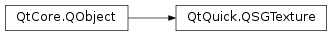

QSGTexture¶
Inherited by: QSGDynamicTexture
Synopsis¶
Functions¶
- def
anisotropyLevel() - def
convertToNormalizedSourceRect(rect) - def
filtering() - def
horizontalWrapMode() - def
mipmapFiltering() - def
setAnisotropyLevel(level) - def
setFiltering(filter) - def
setHorizontalWrapMode(hwrap) - def
setMipmapFiltering(filter) - def
setVerticalWrapMode(vwrap) - def
updateBindOptions([force=false]) - def
verticalWrapMode()
Virtual functions¶
- def
bind() - def
hasAlphaChannel() - def
hasMipmaps() - def
isAtlasTexture() - def
normalizedTextureSubRect() - def
removedFromAtlas() - def
textureId() - def
textureSize()
Detailed Description¶
The
PySide2.QtQuick.QSGTextureclass is a baseclass for textures used in the scene graph.Users can freely implement their own texture classes to support arbitrary input textures, such as YUV video frames or 8 bit alpha masks. The scene graph backend provides a default implementation of normal color textures. As the implementation of these may be hardware specific, they are constructed via the factory function
QQuickWindow.createTextureFromImage().The texture is a wrapper around an OpenGL texture, which texture id is given by
PySide2.QtQuick.QSGTexture.textureId()and which size in pixels is given byPySide2.QtQuick.QSGTexture.textureSize().PySide2.QtQuick.QSGTexture.hasAlphaChannel()reports if the texture contains opacity values andPySide2.QtQuick.QSGTexture.hasMipmaps()reports if the texture contains mipmap levels.To use a texture, call the
PySide2.QtQuick.QSGTexture.bind()function. The texture parameters specifying how the texture is bound, can be specified withPySide2.QtQuick.QSGTexture.setMipmapFiltering(),PySide2.QtQuick.QSGTexture.setFiltering(),PySide2.QtQuick.QSGTexture.setHorizontalWrapMode()andPySide2.QtQuick.QSGTexture.setVerticalWrapMode(). The texture will internally try to store these values to minimize the OpenGL state changes when the texture is bound.
Texture Atlasses¶
Some scene graph backends use texture atlasses, grouping multiple small textures into one large texture. If this is the case, the function
PySide2.QtQuick.QSGTexture.isAtlasTexture()will return true. Atlasses are used to aid the rendering algorithm to do better sorting which increases performance. The location of the texture inside the atlas is given with thePySide2.QtQuick.QSGTexture.normalizedTextureSubRect()function.If the texture is used in such a way that atlas is not preferable, the function
PySide2.QtQuick.QSGTexture.removedFromAtlas()can be used to extract a non-atlassed copy.Note
All classes with QSG prefix should be used solely on the scene graph’s rendering thread. See Scene Graph and Rendering for more information.
See also
Scene Graph - Rendering FBOs Scene Graph - Rendering FBOs in a thread
-
class
PySide2.QtQuick.QSGTexture¶ Constructs the
PySide2.QtQuick.QSGTexturebase class.
-
PySide2.QtQuick.QSGTexture.WrapMode¶ Specifies how the texture should treat texture coordinates.
Constant Description QSGTexture.Repeat Only the fractional part of the texture coordinate is used, causing values above 1 and below 0 to repeat. QSGTexture.ClampToEdge Values above 1 are clamped to 1 and values below 0 are clamped to 0. QSGTexture.MirroredRepeat When the texture coordinate is even, only the fractional part is used. When odd, the texture coordinate is set to 1 - fractional part. This value has been introduced in Qt 5.10.
-
PySide2.QtQuick.QSGTexture.Filtering¶ Specifies how sampling of texels should filter when texture coordinates are not pixel aligned.
Constant Description QSGTexture.None No filtering should occur. This value is only used together with PySide2.QtQuick.QSGTexture.setMipmapFiltering().QSGTexture.Nearest Sampling returns the nearest texel. QSGTexture.Linear Sampling returns a linear interpolation of the neighboring texels.
-
PySide2.QtQuick.QSGTexture.AnisotropyLevel¶ Specifies the anisotropic filtering level to be used when the texture is not screen aligned.
Constant Description QSGTexture.AnisotropyNone No anisotropic filtering. QSGTexture.Anisotropy2x 2x anisotropic filtering. QSGTexture.Anisotropy4x 4x anisotropic filtering. QSGTexture.Anisotropy8x 8x anisotropic filtering. QSGTexture.Anisotropy16x 16x anisotropic filtering.
Note
This enum was introduced in Qt 5.9.
-
PySide2.QtQuick.QSGTexture.anisotropyLevel()¶ Return type: PySide2.QtQuick.QSGTexture.AnisotropyLevelReturns the anisotropy level in use for filtering this texture.
-
PySide2.QtQuick.QSGTexture.bind()¶ Call this function to bind this texture to the current texture target.
Binding a texture may also include uploading the texture data from a previously set
PySide2.QtGui.QImage.Warning
This function can only be called from the rendering thread.
-
PySide2.QtQuick.QSGTexture.convertToNormalizedSourceRect(rect)¶ Parameters: rect – PySide2.QtCore.QRectFReturn type: PySide2.QtCore.QRectFReturns
rectconverted to normalized coordinates.
-
PySide2.QtQuick.QSGTexture.filtering()¶ Return type: PySide2.QtQuick.QSGTexture.FilteringReturns the sampling mode to be used for this texture.
-
PySide2.QtQuick.QSGTexture.hasAlphaChannel()¶ Return type: PySide2.QtCore.boolReturns true if the texture data contains an alpha channel.
-
PySide2.QtQuick.QSGTexture.hasMipmaps()¶ Return type: PySide2.QtCore.boolReturns true if the texture data contains mipmap levels.
-
PySide2.QtQuick.QSGTexture.horizontalWrapMode()¶ Return type: PySide2.QtQuick.QSGTexture.WrapModeReturns the horizontal wrap mode to be used for this texture.
-
PySide2.QtQuick.QSGTexture.isAtlasTexture()¶ Return type: PySide2.QtCore.boolReturns weither this texture is part of an atlas or not.
The default implementation returns false.
-
PySide2.QtQuick.QSGTexture.mipmapFiltering()¶ Return type: PySide2.QtQuick.QSGTexture.FilteringReturns whether mipmapping should be used when sampling from this texture.
-
PySide2.QtQuick.QSGTexture.normalizedTextureSubRect()¶ Return type: PySide2.QtCore.QRectFReturns the rectangle inside
PySide2.QtQuick.QSGTexture.textureSize()that this texture represents in normalized coordinates.The default implementation returns a rect at position (0, 0) with width and height of 1.
-
PySide2.QtQuick.QSGTexture.removedFromAtlas()¶ Return type: PySide2.QtQuick.QSGTextureThis function returns a copy of the current texture which is removed from its atlas.
The current texture remains unchanged, so texture coordinates do not need to be updated.
Removing a texture from an atlas is primarily useful when passing it to a shader that operates on the texture coordinates 0-1 instead of the texture subrect inside the atlas.
If the texture is not part of a texture atlas, this function returns 0.
Implementations of this function are recommended to return the same instance for multiple calls to limit memory usage.
Warning
This function can only be called from the rendering thread.
-
PySide2.QtQuick.QSGTexture.setAnisotropyLevel(level)¶ Parameters: level – PySide2.QtQuick.QSGTexture.AnisotropyLevelSets the level of anisotropic filtering to be used for the upcoming
PySide2.QtQuick.QSGTexture.bind()call tolevel. The default value isQSGTexture.AnisotropyNone, which means no anisotropic filtering is enabled.
-
PySide2.QtQuick.QSGTexture.setFiltering(filter)¶ Parameters: filter – PySide2.QtQuick.QSGTexture.FilteringSets the sampling mode to be used for the upcoming
PySide2.QtQuick.QSGTexture.bind()call tofilter.
-
PySide2.QtQuick.QSGTexture.setHorizontalWrapMode(hwrap)¶ Parameters: hwrap – PySide2.QtQuick.QSGTexture.WrapModeSets the horizontal wrap mode to be used for the upcoming
PySide2.QtQuick.QSGTexture.bind()call tohwrap
-
PySide2.QtQuick.QSGTexture.setMipmapFiltering(filter)¶ Parameters: filter – PySide2.QtQuick.QSGTexture.FilteringSets the mipmap sampling mode to be used for the upcoming
PySide2.QtQuick.QSGTexture.bind()call tofilter.Setting the mipmap filtering has no effect it the texture does not have mipmaps.
-
PySide2.QtQuick.QSGTexture.setVerticalWrapMode(vwrap)¶ Parameters: vwrap – PySide2.QtQuick.QSGTexture.WrapModeSets the vertical wrap mode to be used for the upcoming
PySide2.QtQuick.QSGTexture.bind()call tovwrap
-
PySide2.QtQuick.QSGTexture.textureId()¶ Return type: PySide2.QtCore.intReturns the OpenGL texture id for this texture.
The default value is 0, indicating that it is an invalid texture id.
The function should at all times return the correct texture id.
Warning
This function can only be called from the rendering thread.
-
PySide2.QtQuick.QSGTexture.textureSize()¶ Return type: PySide2.QtCore.QSizeReturns the size of the texture.
-
PySide2.QtQuick.QSGTexture.updateBindOptions([force=false])¶ Parameters: force – PySide2.QtCore.boolUpdate the texture state to match the filtering, mipmap and wrap options currently set.
If
forceis true, all properties will be updated regardless of weither they have changed or not.
-
PySide2.QtQuick.QSGTexture.verticalWrapMode()¶ Return type: PySide2.QtQuick.QSGTexture.WrapModeReturns the vertical wrap mode to be used for this texture.
© 2018 The Qt Company Ltd. Documentation contributions included herein are the copyrights of their respective owners. The documentation provided herein is licensed under the terms of the GNU Free Documentation License version 1.3 as published by the Free Software Foundation. Qt and respective logos are trademarks of The Qt Company Ltd. in Finland and/or other countries worldwide. All other trademarks are property of their respective owners.